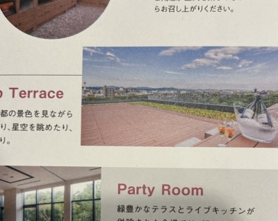
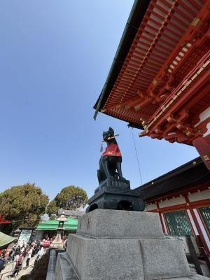
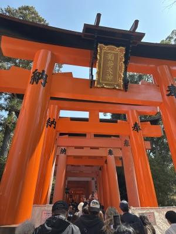
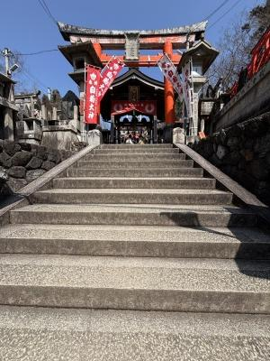
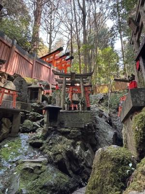
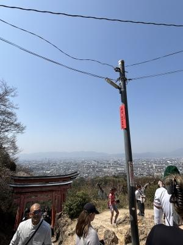
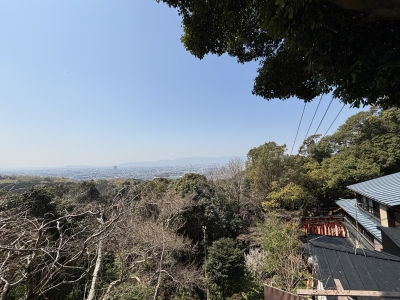
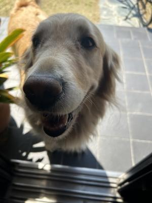

京都に旅行に行きました。2025-3-22・23 その3
今回のホテル(ポテル 笑)は、素泊まりのプランだったので
朝ごはんは近所のコンビニで調達して、ホテルの屋上テラスで食べました。
5階建てのホテルの屋上からは、京都タワーや東寺の五重塔が見えました。
開放感のある気持ちいいテラス・・・今の時期は最高・・・花粉飛んでるけどね(笑)。
↓

朝ごはんの後はフリードリンクのコーヒーを豆から自分で挽いて、入れて、
少し休憩後、部屋を片付けてチェックアウト。
ホテル内の「梅小路発酵所」って施設でお土産、
飲み比べの梅酒のセットを買いました。
ここは麹から広がる「お酒」と「発酵」を感じる施設で、
麹づくりや、オリジナルの調味料づくりを体験できたりするようですね。
長期で滞在予定だったら体験もしてみたかったなぁ・・・。
その後、伏見稲荷大社へ・・・。
事前に無料の駐車場があることは調べてあったんですが、
チェックアウトが10時を過ぎてしまい、その時間から無利用駐車場に行っても、
入れないぞ ? と、いうことで有料でちょっと離れた場所の駐車場を目指しました。
伏見稲荷・・・さすが観光名所、外人さんがいっぱい〜。


伏見稲荷、初めて行ったんだよね〜。


上りの階段の続く参道を歩くうち、汗だくになるくらい。
山頂ではないですが、途中京都の盆地全体が見渡せるような
開けた場所もありました。
展望台みたい !


参拝の最後の方で、伏見稲荷大社の休憩所がありました。
お庭が綺麗でした〜。甘味処 ? があったけど、
外国の方々でごった返しておりました。
稲荷山を降りてから、電車で「伏見桃山」へ移動。
ここで、マグロ丼専門店でお昼ご飯を食べ、頼まれものの「羊羹」を探しました(笑)。
「伏見駿河屋」という和菓子屋さんなんですが、長い歴史の中で何度も暖簾分けをして
分家が幾つもできて行ったようで、結局頼まれたていた本命の羊羹は購入できず・・・(笑)。
分家さんの一つの「伏見駿河屋」さんと、「総本家駿河屋」さんの2つの和菓子屋さんで
羊羹を3000円分も買うってゆー・・・(汗)。
未だかつてこんなに羊羹を買いましたか ? って量の羊羹買っちゃった・・・。
マグロ丼はめっちゃ美味しかったんですが、私もハルもお腹空いてた(笑)せいか
写真を撮り忘れ、モノも言わずにあっという間に平らげましてん(笑)。
なんて店だったか、名前も覚えとらんですわー、でもサイコーだったヨ(爆)。
その後はゆるゆると車を走らせ、愛知県に帰ってきました。
途中事故渋滞でのろのろになってたりしましたが・・・
多分、道中3時間くらいで、夜もそんなに遅くならずに帰れました。
膝が盛大に笑っている以外は「らくしょー ! 」っすね !
と、いうことで京都旅行記は今日でおしまいです。
ハルがずっと前から「高校卒業したら京都に行きたーい !! 」と言っていたので、
ほんとに母と一緒に旅行なんて行きたいのか ? と・・・半信半疑で一応準備してきました。
ま・・・私と一緒なら宿泊代や食事代は自分で出さなくていいし、
車での移動は楽だし・・・ってことはあるんだろうけどね(笑)。
でも、高校卒業するような年で「お母さんと一緒に旅行に行きたい。」なんて、
なんつーか、可愛いじゃないの〜(笑)。
もうすぐ4月 !
新しい生活がいよいよ始まりますよ !

はるちゃんはだいがくしぇいにちゃんとなれたでしゅか。
じゅーっとはるちゃんがおうちにいるから、
ひましゃんはうれしいでしゅよ !!